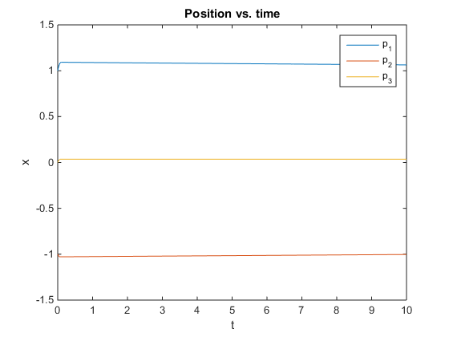
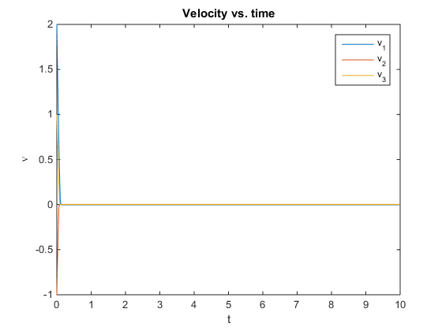
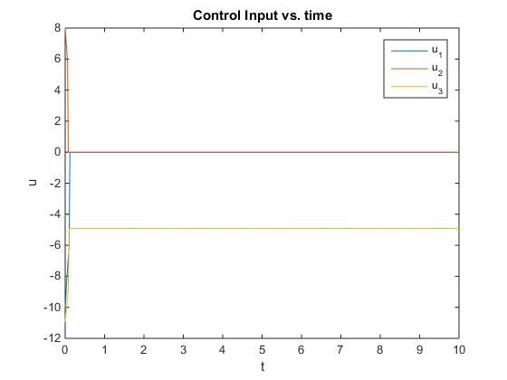

function Schur_HW6_2
close all;
theta=2.5;
k=ones(2,1)*2;
m=0.5;
g=9.81;
e3=[0 0 1]';
epsilon = 0.01;
B = 4;
X0=[1; -1; 0; 2; -1; 1];
N=501;
t=linspace(0,10,N);
[t, X]=ode45(@eom,t,X0);
p = X(:,1:3);
v = X(:,4:6);
for i=1:N
u(i,:) = control(t(i), X(i,:)');
end
figure;plot(t,p);ylabel('x'); xlabel('t')
title('Position vs. time'); legend('p_1', 'p_2', 'p_3');
figure;plot(t,v);ylabel('v','interpreter','latex'); xlabel('t')
title('Velocity vs. time'); legend('v_1', 'v_2', 'v_3');
figure;plot(t,u);ylabel('u'); xlabel('t')
title('Control Input vs. time'); legend('u_1', 'u_2', 'u_3');
end
function X_dot=eom(t,X)
theta=2.5;
m=0.5;
g=9.81;
e3=[0 0 1]';
p=X(1:3);
v = X(4:6);
u=control(t,X);
p_dot=v;
v_dot = g*e3 + u/m - theta/m*sat(v);
X_dot=[p_dot;v_dot];
end
function u=control(t,X)
k=ones(2,1)*2;
m=0.5;
g=9.81;
e3=[0 0 1]';
B = 4;
epsilon = 0.01;
p=X(1:3);
v=X(4:6);
mu = B*v;
V = -mu./(abs(mu)+epsilon)*B;
u= -k(1)*p - k(2)*v - m*g*e3 + V;
end
function s = sat(z)
s = zeros(size(z));
for ii=1:size(z,1)
if z(ii) >=1
s(ii) = 1;
elseif z(ii) <=-1
s(ii) = -1;
else
s(ii) = z(ii);
end
end
end
  